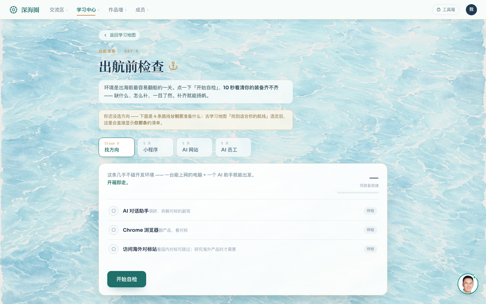
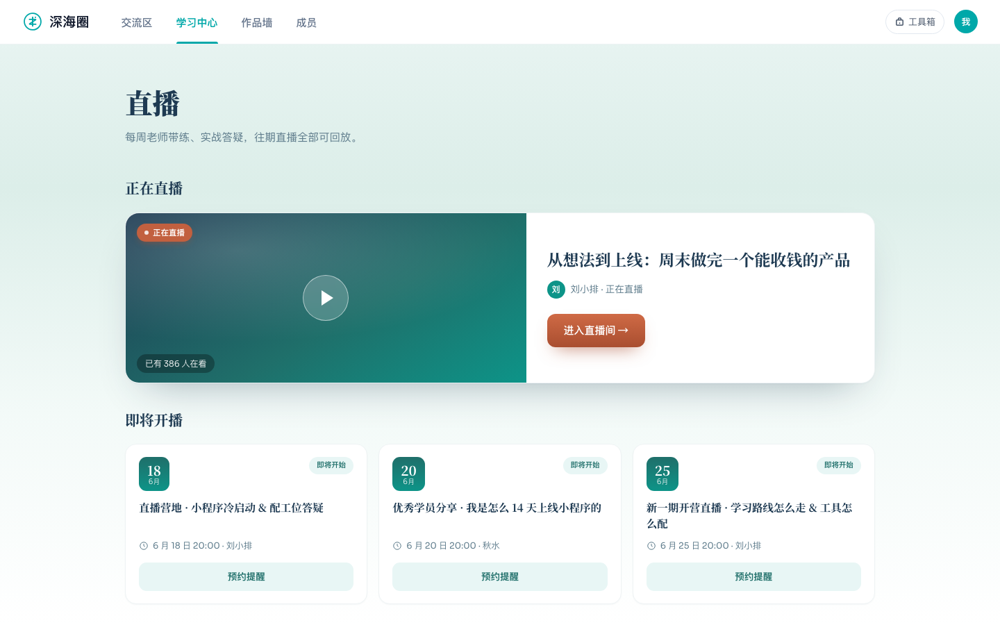

学习指南
哈喽，欢迎来到深海圈。
你刚进来，可能有点懵 —— 这么多课、这么多板块、这么多新词，该从哪儿开始？
别急，第一步特别简单：先花 30 秒告诉我你的情况，我帮你把该走的路铺好。
先定路线，再读指南
不用跳到别的页面。直接选 4 个答案，我会当场把你该走的学习路线定下来；读完下面这份指南，底部按钮会带你进入对应路线。
选完别急着跳走。路线只是入口，下面这份学习指南会告诉你为什么这么走、怎么上第一座岛、卡住了该找谁。
路铺好了，再回来听我把这趟航行讲清楚 —— 先看这个视频 👇
1我们不是来"学 AI 编程"的，是来"做出一个能跑、能收钱的产品"的。
这句话听起来有点功利，但它是你未来几个月最重要的心理锚点。
AI 编程工具月月变，新模型、新框架、新概念层出不穷。如果你把目标定为"学会所有工具"，你会永远在追赶，永远觉得"还没准备好"。
但如果你把目标定为"做出第一个能收钱的产品"，一切都会反过来 —— 你会主动去学"刚好够用"的那部分，会逼着自己把模糊想法变成一行行能跑的代码，会开始关注"用户愿不愿意付钱"这个最真实的问题。
所以，忘掉"我要成为 AI 编程高手"这个宏大目标。我们这趟航行的终点，是你亲手做出一个哪怕再小、但有人愿意付钱的产品。
2如何开始学习？
我们的课程被设计成一张航海图 —— 一座岛，就是一个阶段。从"跑通第一个网页"到"把它部署上线"，再到"挂上支付收第一笔钱"。每学完一节，就点亮一座岛。
 🗺️ 一座岛 = 一个阶段 ｜ ⛵ 小船 = 你学到哪了
↑ 这就是你的学习地图
🗺️ 一座岛 = 一个阶段 ｜ ⛵ 小船 = 你学到哪了
↑ 这就是你的学习地图
点开一座岛，这个阶段的内容全在里面 —— 图文、视频、作业，照着顺序学。

不过别急着冲 —— 正式上岛前，先花十分钟把装备备齐：账号、开发环境、要用的工具，别让"环境没搞定"挡在第一步前面。

光自己看还不够 —— 每周还有直播：

这些岛你得一座座走通、不跳关。要是你已经想好做哪种产品（小程序、网站、AI 员工……），可以挑一条专门为它铺好的航线，路上每一步都冲着"做出它"去；还没想好，就走默认那条完整路线，照样走得通。走通一条想换个方向，随时能再开一条新的。
 🧭 比如选「开发一个小程序」，地图就只留这条路要走的岛
👉 想换条路线，左侧「找专属路线」随时可用
🧭 比如选「开发一个小程序」，地图就只留这条路要走的岛
👉 想换条路线，左侧「找专属路线」随时可用
你的任务不是"看完所有岛"，而是用最短的时间，登上第一座岛。
哪怕它只是个"番茄钟"网页，哪怕它丑得没法看。只要你今晚能让它在浏览器里跑起来，你就完成了最重要的一步 —— 你证明了"我能做到"。这种正反馈，比任何鸡汤都管用。
3卡住了怎么办？
一定会卡住。我当年学的时候，卡住的时间比顺畅的时间多得多。
但在这里，你不用一个人硬扛：
先去广场
广场上每天都有人在解决类似的问题，你遇到的坑，大概率有人刚爬出来。
再找助教
广场里随时能 @ 到助教——他们都是走过这条路的老学员，知道哪儿最容易摔跤。
翻翻干货
报错、卡壳大多有人写过，先搜搜前人趟过的坑，少走弯路。
右下角的随身小助手
卡住了，直接在那儿把问题甩给我；平时它也能带你一键跳回正在学的地方、推给你最新的直播动态。
4现在，你的第一步是什么？
进入学习地图，上第一座岛「跑通第一个产品」，跟着第一节课做。
不要跳，不要快进，不要觉得"太简单了"。跟着它，一步一步做。
我只要你做一件事：在接下来的 2 小时内，让一个网页 —— 哪怕它只显示"Hello World"—— 在你的浏览器里跑起来。
然后，截图，发到广场，说"我跑通了"。
你会收到第一波"恭喜"。那一刻，你就已经上路了。
记住，这里没有"学完了再开始"，只有"开始了才算学"。
期待看到你的第一个作品。